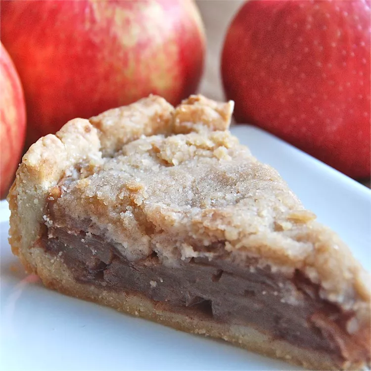

Apple Crumble Pie

Description
Yummy variety of apple pie that is quick and easy. It was a hit with my boyfriend's pals in university whenever I made this favorite!
Ingredients
- 1 (9 inch) deep dish pie crust
- 5 cups apples - peeled, cored and thinly sliced
- ½ cup white sugar
- ¾ teaspoon ground cinnamon
- ⅓ cup white sugar
- ¾ cup all-purpose flour
- 6 tablespoons butter
Steps
- Preheat oven to 400 degrees F (200 degrees C.)
- Arrange apple slices in unbaked pie shell. Mix 1/2 cup sugar and cinnamon; sprinkle over apples.
- Mix 1/3 cup sugar with flour; cut in butter until crumbly. Spoon mixture over apples.
- Bake in preheated oven until apples are soft and top is lightly browned, about 40 minutes.
Main page